¿Qué es Pokemon Unite?
Pokemon Unite es un juego de batallas estratégicas en el que diferentes Pokémon se enfrentan en equipo y a su vez tienen que hacer objetivos, para ganar se necesita que un equipo meta tantos en las bases del otro equipo, el equipo que tenga más tantos será el ganador.
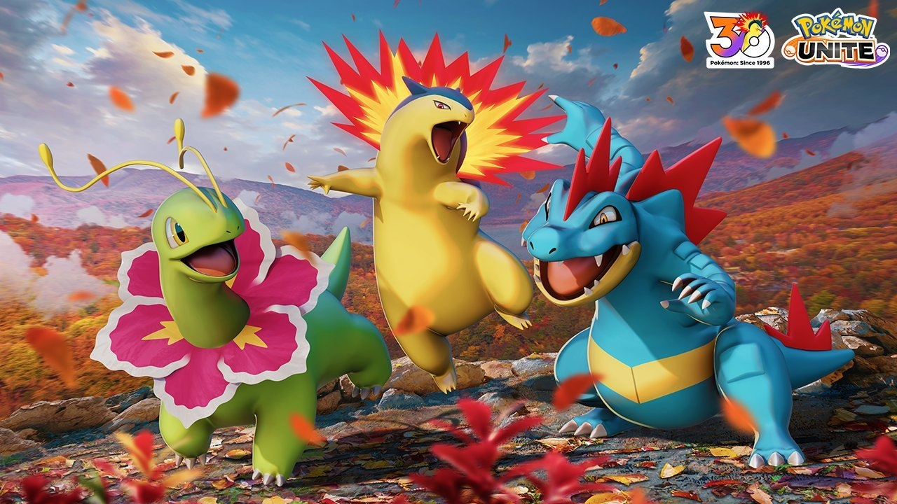
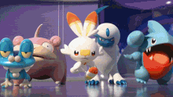
Pokémon
En Pokémon Unite existen diferentes Pokémons que cumplen distintos roles dentro de las partidas.
- Ofensivo
- Defensivo
- Ágil
- Equilibrado
- Auxiliar
Elige tu estilo de juego
Cada Pokémon cumple un rol diferente dentro de Pokémon Unite. Descubre cuál estilo se adapta más a ti.
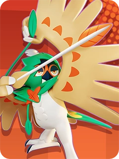
Ofensivo
Causa grandes cantidades de daño a los Pokémon rivales.
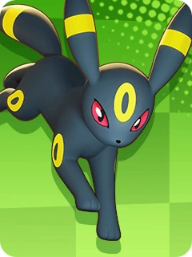
Defensivo
Protege a sus compañeros y resiste los ataques enemigos.
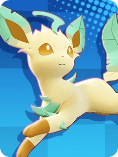
Ágil
Se mueve rápidamente por el campo de batalla y puede sorprender a sus rivales.
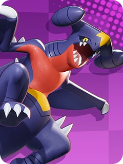
Equilibrado
Combina ataque y defensa para adaptarse a diferentes situaciones.
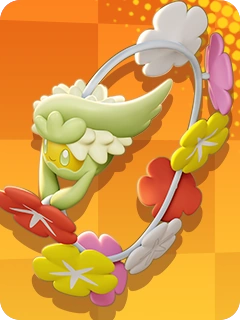
Auxiliar
Ayuda a sus compañeros mediante curaciones y mejoras.
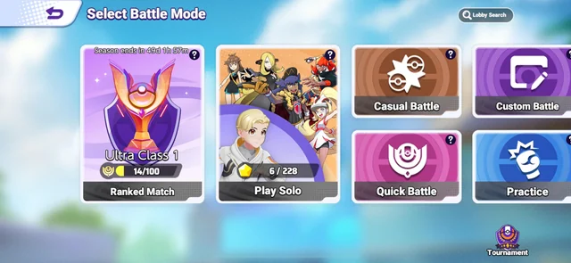
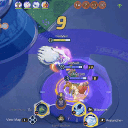
¿Qué modos de juego hay?
En Pokémon Unite hay diferentes modos de juego con el cual los jugadores pueden decidir jugar, entre estos están.
- Casual 5v5
- Competitivo
- Solitario
- Juego rápido
- Práctica
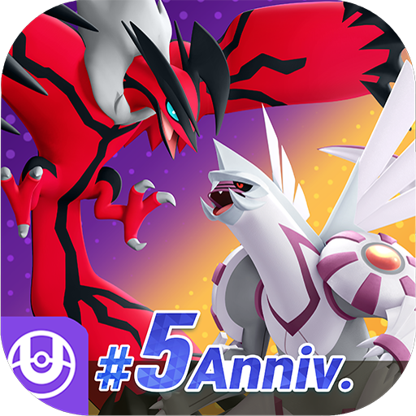
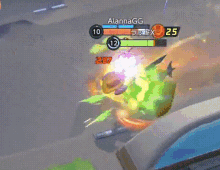
¿Cómo se juega?
Bueno como ya se dijo antes el juego es por equipos en este caso 5v5 cada equipo tiene su línea en la cual va estar batallando contra el otro equipo. En el juego se empieza con el nivel uno y al paso que va la partida se va subiendo de nivel, el máximo nivel es 15. Para ganar como se dijo antes es el equipo que anote tantos. Los puntos para anotar tantos se consiguen matando objetivos o personas del equipo rival. La partida dura 10 minutos y a los 2 minutos hay un x2 de tantos, por lo cual se tiene que ser muy atento a ese tiempo de partida. Y ya cuando acabe el tiempo se ve el contador de tantos y el equipo que tenga más ganará.